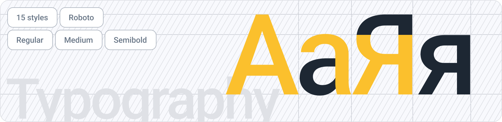

Типографика
Как шрифт, созданный специально для пользовательских интерфейсов, Inter обеспечивает оптимальную читаемость при небольших размерах и вариативную настройку шрифта в Интернете — и все это без потери индивидуальности.
 Компонент в FigmaСтили
Четкая иерархия типов является ключевым компонентом в создании четкой информационной архитектуры. Четкая иерархия обеспечивает быстрое понимание и повышает эффективность взаимодействия пользователя с приложением. Модульная шкала — это методология, которая устанавливает логическую последовательность размеров шрифтов в интерфейсе. Мы выбрали большую секундную шкалу (1,125) , чтобы обеспечить иерархический контраст и оптимальную читаемость, не занимая слишком много места в приложении.